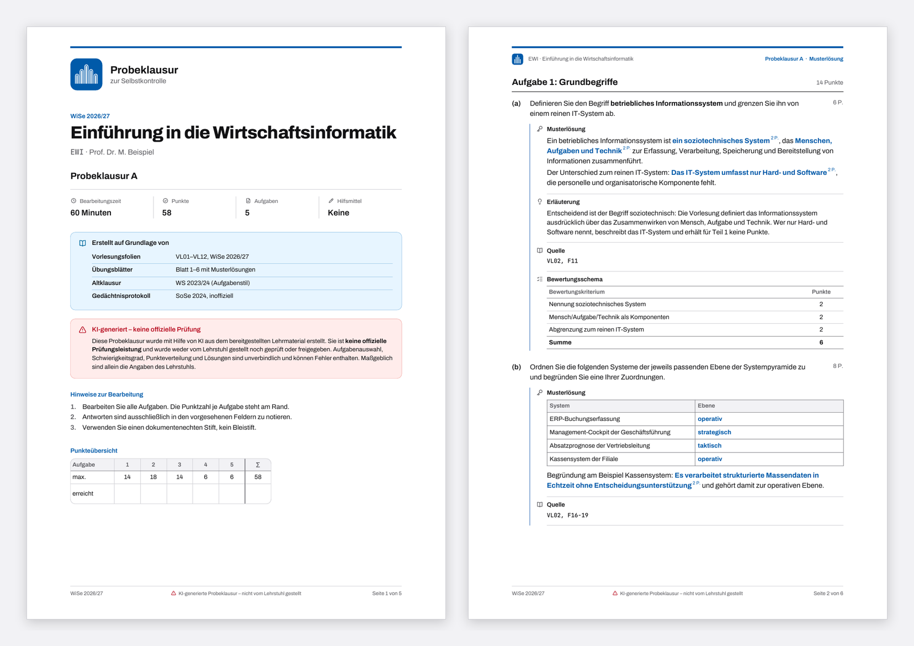
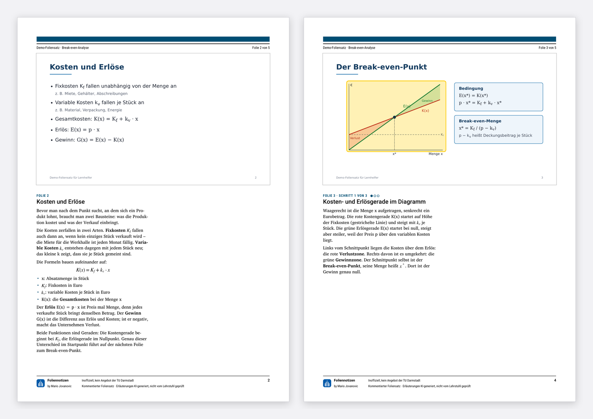

Claude-Skills fürs Studium
Lernhelfer
Zwei Skills für Claude: Der Klausurtrainer erstellt Probeklausuren mit Musterlösung und Bewertungsschema, die Foliennotizen erklären einen Foliensatz Folie für Folie. Beide arbeiten nur mit dem Material, das du hochlädst.
- Skills
- 2
- Klausurtrainer, Foliennotizen
- Läuft in
- Claude
- claude.ai, Desktop-App, Claude Code
- Ergebnis
- mit KI-Hinweis auf jeder Seite
- Lizenz
- MIT
Was die Skills können
- Klausurtrainer
- Foliennotizen
- Geprüfte Ergebnisse
Klausurtrainer
Aus Folien, Übungen und auf Wunsch einer Altklausur entsteht eine Probeklausur. Claude zeigt dir zuerst ein Gerüst mit Themen und Punkten; erst nach deiner Freigabe entstehen Aufgabenblatt und Musterlösung.

Foliennotizen
Für Vorlesungen, die du verpasst hast oder nacharbeiten willst: Unter jeder Folie steht, was die Dozentin dazu erklärt hätte – mit Legende zu jeder Formel und gelben Markierungen an den wichtigen Stellen.

Installation
In claude.ai oder der Desktop-App: die ZIP-Datei eines Skills herunterladen und unter claude.ai/customize/skills hochladen. Dafür muss die Code-Ausführung eingeschaltet sein.
In Claude Code als Plugin:
/plugin marketplace add MarioJovc/lernhelfer
/plugin install lernhelfer@lernhelferGut zu wissen
- Nur dein Material
- KI-Hinweis
- Urheberrecht